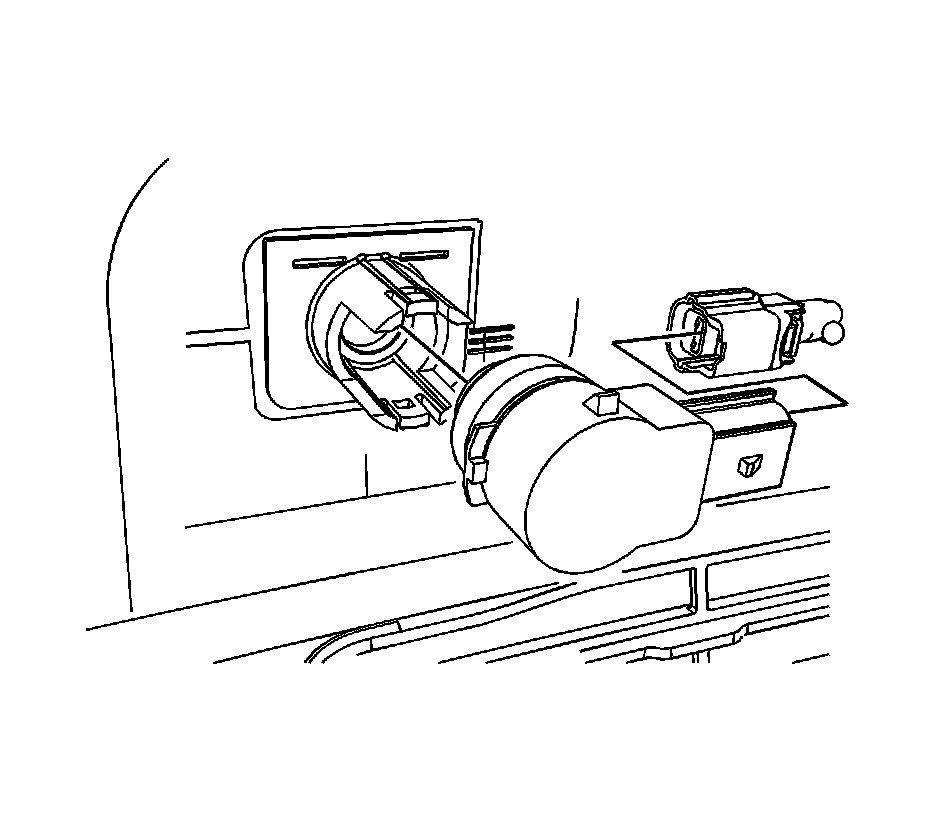

Rear Object Sensor Replacement
REAR OBJECT SENSOR REPLACEMENT
REMOVAL PROCEDURE

1. Remove rear bumper fascia.
2. Disconnect electrical from the rear object sensor.
3. Lift the locking tabs on the housing and remove the rear object sensor.
INSTALLATION PROCEDURE
1. IMPORTANT: Do not refinish previously painted sensors. Excess paint build up will cause the sensor to be inoperative.
Paint the rear object sensor. Refer to Basecoat/Clearcoat Paint Systems.
2. Ensure the paint does not exceed 6 mils. Use a paint thickness gauge suitable for non-ferrous metals. Refer to Paint Gages.
3. Insert the sensor into the housing.
4. Connect the electrical connector to the rear object sensor.
5. Install the rear bumper fascia.